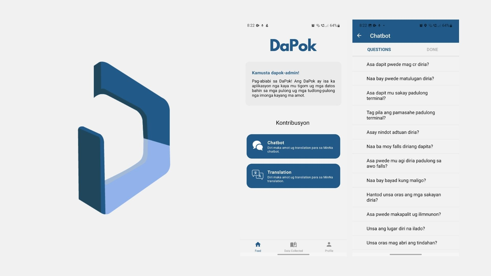
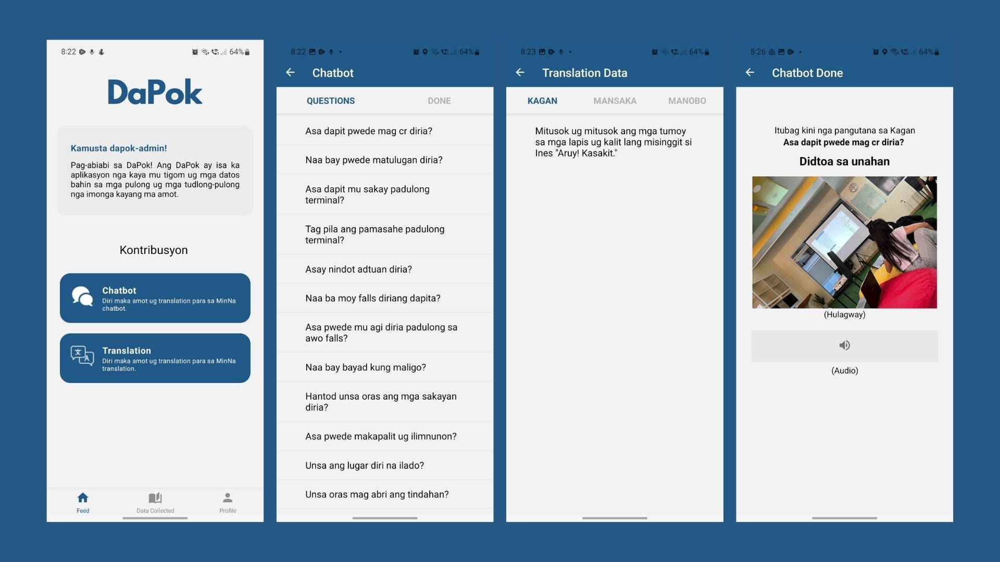

DaPok

DaPok is a mobile application that focuses on data gathering. This focuses on Mindanao Endangered Languages like Kagan, Manobo and Mansaka. Its main features are on collecting Chatbot answers and translations for words, sentences and phrases which will be translated to the said languages.

Contribution
DaPok was a requirement for our OJT internship at UIC MinNa LProc Research and Development Laboratory and it was a two-man project. I had experience on developing a mobile application from our capstone which is why I volunteered working on the back-end developing and also helped with the front-end development. We used react-native expo and firebase on this mobile application which we also used during our capstone thesis. I also had a hard time to adapt as back-end development is not my forte.
The logo of DaPok was a collaboration design. I designed the illusion of D (the shape of the logo) and P where the darker color was shaped into. The UI/UX design was also done as a group, we made it easier to follow since the user of the application may or may not be illiterate considering that this application will be used for tribes not living in the city. Thus, there will be volunteers that will help the users but we tried to make it easier for the user to follow. The design also depended on the availability of React Native Expo Packages.